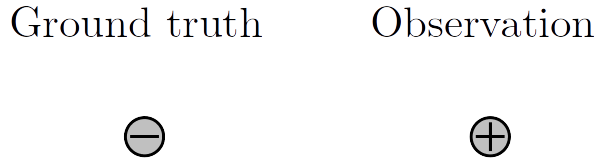
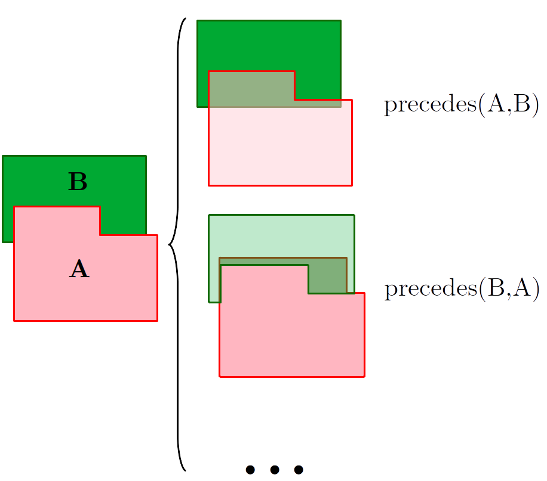
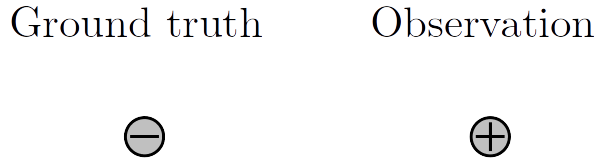
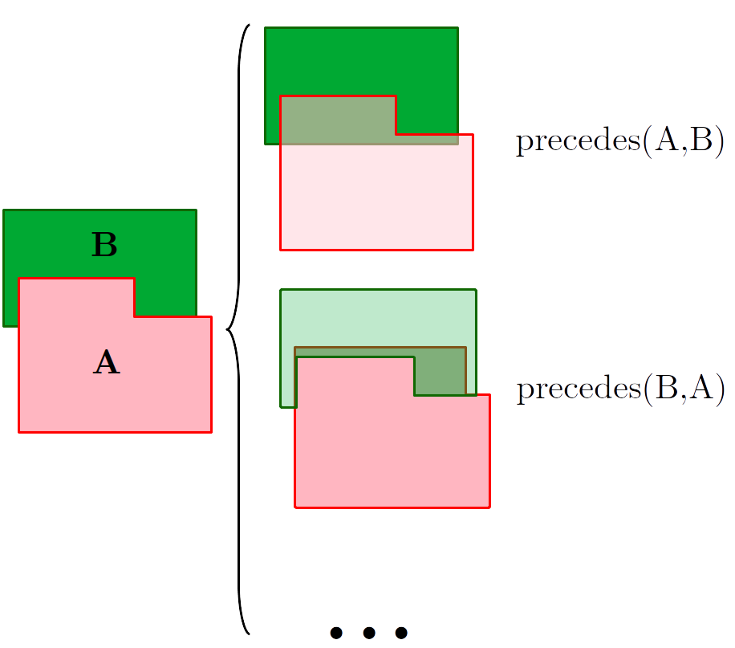

New Methods for Bridging Symbolic-Geometric Reasoning, Addressing Uncertainty and Action Learning in Task Planning for Robotics
Directed by
Motivation
Objectives
Contributions
Planning and Execution
Dual-arm Symbolic-motion Planning
Planning in Face of Stochastic Outcomes
Leveraging Simulators to Minimize Risk
Learning Planning Operators
STRIPS Action Discovery
INtuitive PROgramming
Online Action Recognition through Unification
INtuitive PROgramming 2
Take-aways
Motivation
- T6.1
- Action Planning (M1-M36)
- T6.2
- Replanning in case of dead-ends or unmatching effects (M13-M36)
- T6.3
- Action monitoring and reaction to failed executions (M25-M42)
Deliverables
- D6.1 (Feb 6, 2018)
- Planner software prototype for action selection (M12)
- D6.2 (Feb 20, 2019)
- Planner software prototype for replanning (M24)
- D6.3 (Mar 23, 2020)
- Planner software prototype for generalization (M36)
Contributions
Outside of the initially planned tasks and deliveries:
- Dealing with partial observability
- Acquire new actions from pre-state and post-state
Dealing with partial observability
Sources of error
- Misdetection of components
- Misclassification of components
- Misjudgement of precedence relationships
 



Observations
Difference between states and observations: $ S \neq O(S) $Belief states
Factored probability distribution over possible predicates: $ b(S) = \prod_{t \in T} b_t (t) $Update of belief state
Next belief state $ b_{n+1}(S) $ given previous $ b_n(S) $, previously executed action $ a_n $ and new observation $ O_{n+1} $?
Particle filtering with importance sampling
Input: Number of particles $ N $, previous belief $ b_n(S) $, previous action $ a_n $, next observation $ O_{n+1} $
Output: Updated belief $ b_{n+1}(S) $
$ p \leftarrow \{ \} $
$ i \leftarrow 0 $
while $ i \lt N $ do
$ s_i \leftarrow $Sample($ b_n(s) $)
$ s'_i \leftarrow $Sample($ \mathbb{P}(s'|s,a_n) $)
$ w_i \leftarrow \mathbb{P}(O_{n+1}|s') $
$ p \leftarrow p \cup \{ (w_i,s'_i) \} $
$ i \leftarrow i+1 $
end while
$ b_{n+1} \leftarrow $ empty map
for $ t \in T $ do
$ b_{n+1}[t] \leftarrow \frac{\sum_{i|t \in s'_i} w_i}{ \sum_i w_i} $
end for
return $ b_{n+1} $
Probability of $ t $ estimated as its relative frequency in all sampled $ S_{n+1} $, weighted by $ w_i $
Assumption-based planning
Main idea: determinize belief making assumptions over the state.
The cost of the assumptions depends on the probability $ p $ of each predicate.
Example:
1: assume(not(fixed(y,x))) 2: assume(not(retrieved(y))) 3: lever(y)
Information gathering actions
Action that does not affect the world directly, only the internal belief of the robot.
Example: trigger perception again. Question: change angle of view a little bit?
Drawback of assumption planning: not obvious how to incentivize actions with no physical effects.
Monte-Carlo Tree Search (MCTS)
MCTS decides major strategic decisions: observe or handle part
MCTS is a simulation-based algorithm, and considers every action regardless of their type.
New opportunity: assign scores to different components(ECYC: maybe economic value)?
Action refining
Actions output by MCTS have to be broken down into simple actions
These smaller plans can be approached with assumption-based planning
$ a = \mathrm{handle}(\mathit{part}_6, \mathit{motor\_contacts}) $ expanded into
- assume(not(precedes($ \mathit{part}_1 $, $ \mathit{part}_6 $)))
- switch_tool(cutting_tool)
- cut($ \mathit{part}_6 $)
Action acquisition
Learning new actions
- Learn symbolic structure of new action
- We use Action Unification (Suárez-Hernández et al, 2021)
- Mild requirements: state before and after action demonstration
Benchmarks
Virtual disassembly environment


Quality metrics
Metrics:
- Coverage (%): Percentage of devices fully disassembled
- Avg. Completion (%): Avg. proportion of disposed parts
- Avg. Score: Avg. value of disposed parts
- Avg. Cost: Avg. time spent per device.
B6.1: plan quality
Evaluation of quality metrics in a virtual environment with hard-drives and GPUs with random variations, as well as several (+100) procedurally generated devices. Configurations:
- (Baseline) Random decision maker
- (Baseline) Reactive strategy: select ASC with highest confidence
- (Baseline) Planner with perfect knowledge of current state
- Re-planner (D6.1, D6.2)
- Assumption-based planner
- MCTS planner
Hypotheses
- 2 and 4 get stuck more often than 5 and 6
- 1 ranks lowest in coverage and time
- 3 should be indicative of the best we can do
- 4, 5 and 6 have bettwe coverage than 1 and 2.
B6.2: Benefit of information-gathering actions
Ablation-study to analyze benefit of information gathering actions (only MCTS approach).
Hypotheses
- MCTS exhibits higher coverage and avg. completion with information gathering than without, but requires more time.
Thank you